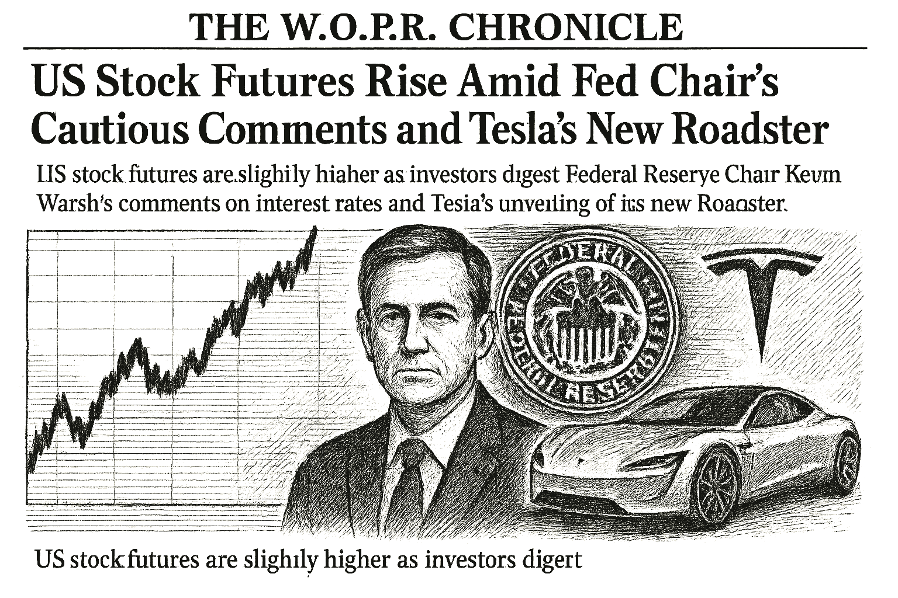

SPY
Current: $771.40Change: -7.17 (-0.92%)
Updated:
Source: yahoo_chartFreshness: fresh


US stock futures are slightly higher as investors digest Federal Reserve Chair Kevin Warsh's comments on interest rates and Tesla's unveiling of its new Roadster.

Today's Headline: US Stock Futures Rise Amid Fed Chair's Cautious Comments and Tesla's New Roadster Reveal
Setup: US stock futures are slightly higher as investors digest Federal Reserve Chair Kevin Warsh's comments on interest rates and Tesla's unveiling of its new Roadster.
Primary Topic: US Stock Futures
Specific Development: Futures linked to major US indices are showing slight gains following positive sentiment from Tesla's new product launch and cautious remarks from Fed Chair Warsh.
Why Today Is Different: Warsh's avoidance of specific rate guidance amid inflation concerns has led to a more optimistic outlook for equities, contrasting with recent volatility in tech stocks.
Secondary Topics: Tesla; Federal Reserve; Market Sentiment
Tone: cautiously optimistic
Sectors: Technology; Consumer Discretionary
Companies: TSLA
Countries Or Regions: United States
Macro Themes: Interest Rates; Inflation
Why This Story: The interplay between Fed guidance and corporate developments like Tesla's new product could significantly influence market sentiment and trading strategies.
Why This Matters: US Stock Futures Edge Higher as Fed Chair Warsh Avoids Rate Guidance and Tesla Unveils New Roadster: Dow is the clearest current evidence-led frame for Joshua's observation-only review; missing facts remain explicit intelligence gaps.
Summary: US stock futures are showing slight gains, while tech stocks have faced volatility. Global markets are reacting to geopolitical tensions and economic indicators.
Why This Matters: The performance of US futures can set the tone for global markets, influencing investor sentiment and trading strategies.
TSLA Earnings Expectations — 2026-10-21, After Close
Consensus EPS: $0.45
Year-ago EPS: unavailable
Expected EPS growth: unavailable
Consensus revenue: $28.4B
Year-ago revenue: unavailable
Expected revenue growth: unavailable
Source: finnhub_earnings_calendar · As of: 2026-10-16T14:05:57.264244+00:00 · Freshness: current

- WOPR learning pipeline: Learning present — untrusted
- Candidates evaluated 24h: 0
- Current gate: Learning trust
- Notification ledger events in 24h: 6
- Pending orders created/canceled/filled/expired: 1/0/0/0
- Pending lifecycle interpretation: Pending-order cancellations have trackable reasons and no obvious rapid churn pattern.
- Portfolio risk: Label: High / Score: 100.0
- Latest intelligence gap report: intelligence_gap_report_2026-10-11.pdf
Why This Matters: The active gate is Learning trust, so the key question is why candidates are stopping before approval, not how to force trades.

- Sentinel role: infrastructure and operational status only.
- State: ONLINE
- Last successful validation: 2026-10-16T14:14:36.221917+00:00
- Payloads accepted/rejected: 27074/0
- Node health score: 100
Why This Matters: Sentinel is ONLINE, so Joshua should use its context only to the extent the latest accepted pulse is fresh and authenticated.

CANDIDATES MOVING THROUGH JOSHUA'S INVESTMENT-REVIEW WORKFLOW
FROZEN DAILY BRIEF SNAPSHOT | 2026-10-16T14:14:59.224788+00:00
QUEUE SUMMARY | Investment Ready: 0 | Waiting for Price: 0 | Waiting for Evidence: 1 | Research Underway: 2 | Governance Hold: 5 | Monitor Only: 0
Investment-ready status: No candidates are currently Investment Ready.
#5 NVDA - Waiting for Evidence [Moved Up 6->5]
Joshua's Thesis: Positive thesis not yet established.
Why Waiting: Positioning gate failed.
Price: 216.53 now; 216.23 preferred entry
What Unlocks It: Clear valuation support; Evidence that the business quality matches the risk being taken; Independent evidence streams pointing the same way
Portfolio Fit: 36.5/100 — LOW ↑
Portfolio Fit Drivers: projected Technology exposure 49.9%; projected AI infrastructure exposure 49.9%; candidate amount $100 vs $100 currently allocated
Candidate Risk: 55.5/100 — FAIR ↓
Risk Drivers: projected Technology exposure 49.9%; projected AI infrastructure exposure 49.9%; candidate amount $100 vs $100 currently allocated
Next: Positioning status must no longer be warning. Owner: Joshua.
#6 AVGO - Governance Hold [Moved Up 7->6]
Joshua's Thesis: Positive thesis not yet established.
Why Waiting: Governance gate has not cleared.
Price: 338.37 now; 357.70 preferred entry
What Unlocks It: Governance gate clears; Clear valuation support; Evidence that the business quality matches the risk being taken
Portfolio Fit: 36.5/100 — LOW ↑
Portfolio Fit Drivers: projected Technology exposure 49.9%; projected AI infrastructure exposure 49.9%; candidate amount $100 vs $100 currently allocated
Candidate Risk: 55.5/100 — FAIR ↓
Risk Drivers: projected Technology exposure 49.9%; projected AI infrastructure exposure 49.9%; candidate amount $100 vs $100 currently allocated
Next: Re-evaluate after the recorded gate clears. Owner: Columbo.
#11 PLTR - Governance Hold [Moved Up 15->11]
Joshua's Thesis: Positive thesis not yet established.
Why Waiting: Governance gate has not cleared.
Price: 196.24 now; 196.22 preferred entry
What Unlocks It: Governance gate clears; Clear valuation support; Evidence that the business quality matches the risk being taken
Portfolio Fit: 36.5/100 — LOW ↑
Portfolio Fit Drivers: projected Technology exposure 49.9%; projected AI software exposure 49.9%; candidate amount $100 vs $100 currently allocated
Candidate Risk: 55.5/100 — FAIR ↓
Risk Drivers: projected Technology exposure 49.9%; projected AI software exposure 49.9%; candidate amount $100 vs $100 currently allocated
Next: Re-evaluate after the recorded gate clears. Owner: Columbo.
#16 QBTS - Governance Hold [Moved Down 10->16]
Joshua's Thesis: Positive thesis not yet established.
Why Waiting: Governance gate has not cleared.
Price: 12.51 now; 17.52 preferred entry
What Unlocks It: Governance gate clears; Clear valuation support; Evidence that the business quality matches the risk being taken
Portfolio Fit: 0.0/100 — VERY LOW
Portfolio Fit Drivers: projected Unclassified exposure 87.4%; projected Unclassified exposure 87.4%; candidate amount $100 vs $100 currently allocated
Candidate Risk: 100.0/100 — VERY HIGH ↑
Risk Drivers: projected Unclassified exposure 87.4%; projected Unclassified exposure 87.4%; candidate amount $100 vs $100 currently allocated
Next: Re-evaluate after the recorded gate clears. Owner: Joshua.
#18 DIA - Research Underway [Moved Up 24->18]
Joshua's Thesis: Positive thesis not yet established.
Why Waiting: Research evidence is still being gathered.
Price: Current price unavailable.; Preferred entry not established.
What Unlocks It: Clear valuation support; Evidence that the business quality matches the risk being taken; Independent evidence streams pointing the same way
Portfolio Fit: 36.5/100 — LOW ↑
Portfolio Fit Drivers: projected ETF exposure 49.9%; projected Broad market exposure 49.9%; candidate amount $100 vs $100 currently allocated
Candidate Risk: 55.5/100 — FAIR ↓
Risk Drivers: projected ETF exposure 49.9%; projected Broad market exposure 49.9%; candidate amount $100 vs $100 currently allocated
Next: Clear valuation support; Evidence that the business quality matches the risk being taken; Independent evidence streams pointing the same way. Owner: Columbo.
#22 RCL - Governance Hold [Moved Down 17->22]
Joshua's Thesis: Positive thesis not yet established.
Why Waiting: Governance gate has not cleared.
Price: 282.57 now; 279.94 preferred entry
What Unlocks It: Governance gate clears; Clear valuation support; Evidence that the business quality matches the risk being taken
Portfolio Fit: 0.0/100 — VERY LOW
Portfolio Fit Drivers: projected Unclassified exposure 87.4%; projected Unclassified exposure 87.4%; candidate amount $100 vs $100 currently allocated
Candidate Risk: 100.0/100 — VERY HIGH ↑
Risk Drivers: projected Unclassified exposure 87.4%; projected Unclassified exposure 87.4%; candidate amount $100 vs $100 currently allocated
Next: Re-evaluate after the recorded gate clears. Owner: Columbo.
#24 SPCX - Governance Hold [Moved Down 21->24]
Joshua's Thesis: Positive thesis not yet established.
Why Waiting: Governance gate has not cleared.
Price: 147.32 now; 152.11 preferred entry
What Unlocks It: Governance gate clears; Clear valuation support; Evidence that the business quality matches the risk being taken
Portfolio Fit: 0.0/100 — VERY LOW
Portfolio Fit Drivers: projected Unclassified exposure 87.4%; projected Unclassified exposure 87.4%; candidate amount $100 vs $100 currently allocated
Candidate Risk: 100.0/100 — VERY HIGH ↑
Risk Drivers: projected Unclassified exposure 87.4%; projected Unclassified exposure 87.4%; candidate amount $100 vs $100 currently allocated
Next: Re-evaluate after the recorded gate clears. Owner: Advisory Committee.
#25 XRAY - Research Underway [Moved Down 22->25]
Joshua's Thesis: Positive thesis not yet established.
Why Waiting: Research evidence is still being gathered.
Price: 8.81 now; Preferred entry not established.
What Unlocks It: Clear valuation support; Evidence that the business quality matches the risk being taken; Independent evidence streams pointing the same way
Portfolio Fit: 0.0/100 — VERY LOW
Portfolio Fit Drivers: projected Unclassified exposure 87.4%; projected Unclassified exposure 87.4%; candidate amount $100 vs $100 currently allocated
Candidate Risk: 100.0/100 — VERY HIGH ↑
Risk Drivers: projected Unclassified exposure 87.4%; projected Unclassified exposure 87.4%; candidate amount $100 vs $100 currently allocated
Next: Clear valuation support; Evidence that the business quality matches the risk being taken; Independent evidence streams pointing the same way. Owner: Columbo.
Since the prior Chronicle: UUUU - Removed
Observation only. This section creates no recommendation, order, authority, or execution instruction.

- If NVDA reaches the recorded price condition <= 216.23, which recorded evidence and governance requirements would still remain?
- Which recorded governance requirement must clear before AVGO can advance?
- Which recorded governance requirement must clear before PLTR can advance?
- Which recorded governance requirement must clear before QBTS can advance?
- What TSLA EPS or revenue result would materially change the current recorded thesis?

The cautious tone from the Fed combined with positive corporate developments like Tesla's new Roadster reveal could lead to a more favorable trading environment. However, ongoing geopolitical tensions and volatility in tech stocks remain significant risks.

Compared to: 2026-10-15
- Market weather: Still Cautious
- Top opportunity: Still DELL
- Joshua gate: Still Learning trust
- 2Y Treasury.last_price: 4.77 -> 4.77 (unchanged); 2Y Treasury.last_price changed 0.00% versus the prior frozen Chronicle snapshot.
- 2Y Treasury.percent_change: -1.0373443983402637 -> -1.0373443983402637 (unchanged); 2Y Treasury.percent_change changed 0.00% versus the prior frozen Chronicle snapshot.
- 10Y Treasury.last_price: 5.1 -> 5.1 (unchanged); 10Y Treasury.last_price changed 0.00% versus the prior frozen Chronicle snapshot.
- 10Y Treasury.percent_change: -1.734104046242789 -> -1.734104046242789 (unchanged); 10Y Treasury.percent_change changed 0.00% versus the prior frozen Chronicle snapshot.
- 30Y Treasury.last_price: 5.43 -> 5.43 (unchanged); 30Y Treasury.last_price changed 0.00% versus the prior frozen Chronicle snapshot.
- 30Y Treasury.percent_change: -1.6304347826086931 -> -1.6304347826086931 (unchanged); 30Y Treasury.percent_change changed 0.00% versus the prior frozen Chronicle snapshot.
- SPY.last_price: 771.94 -> 771.4 (down); SPY.last_price changed 0.07% versus the prior frozen Chronicle snapshot.
- SPY.percent_change: -0.8515611955251288 -> -0.9209191209525248 (down); SPY.percent_change changed 8.14% versus the prior frozen Chronicle snapshot.
- QQQ.last_price: 722.1 -> 721.37 (down); QQQ.last_price changed 0.10% versus the prior frozen Chronicle snapshot.
- QQQ.percent_change: -3.8827585288910726 -> -3.9799273230662715 (down); QQQ.percent_change changed 2.50% versus the prior frozen Chronicle snapshot.
- IWM.last_price: 275.38 -> 274.98 (down); IWM.last_price changed 0.15% versus the prior frozen Chronicle snapshot.
- IWM.percent_change: -1.2762601276260137 -> -1.4196601419660069 (down); IWM.percent_change changed 11.24% versus the prior frozen Chronicle snapshot.

The shift in sentiment from cautious to optimistic is driven by the Fed's lack of specific guidance on rates and positive corporate news.
No new warnings; previous cautions regarding tech stock volatility remain relevant.
Portfolio Construction Review
Current allocation: 100.33 allocated.
Largest sector: Unclassified at 74.8%.
Largest theme: Unclassified at 74.8%.
Diversification: Concentrated (25.2).
Cash allocation: 90.0% unallocated.
Recommended exposure: DELL at portfolio-fit score 36.5.
Portfolio fit: DELL has strong standalone evidence, but it increases portfolio concentration.
Why This Matters: Portfolio Manager evaluates whether an opportunity improves this portfolio; it does not select the investment, vote, or authorize execution.

Monitor the impact of Fed guidance on market sentiment and adjust strategies accordingly.

| Can trigger trade | no |
| Can modify trade rules | no |
| Can add watch items | yes |
| Can add review questions | yes |
| Can adjust confidence notes | yes |
| Input policy | external_intelligence_plus_sanitized_internal_observations |
| External policy | The Editor-in-Chief synthesizes current world/market context where available and labels unknowns; provider/model provenance remains separate. |
| Internal policy | Joshua/WOPR/Sentinel facts are supplied as sanitized observation-only summaries. |
| Editorial model | gpt-4o-mini |
- Selected by a deterministic daily rotation through symbols already present in the persisted Chronicle snapshot.
- Next earnings: October 28, 2026 (after close); status: scheduled.
- Source: finnhub_earnings_calendar.
- South Korea reviews expanding military mission in Middle East, report says - Reuters
- Desk: geopolitical; source: Reuters; linked symbols: none recorded.
- Published: 10/15/26 20:59 MST.
- High-impact watch: FOMC Meeting Two-day meeting, October 27 - 28 Press Conference - 10/28/26 11:00 MST.
- Affected assets: US equities, Treasuries, USD; source: federal_reserve_calendar.
- TSLA earnings: October 21, 2026, after close.
- RCL earnings: October 27, 2026, before open.
- FDX earnings: October 28, 2026, after close.
- Consumer Staples: 5.24% session performance; source: persisted sector ledger.
- Health Care: 4.09% session performance; source: persisted sector ledger.
- Materials: 3.85% session performance; source: persisted sector ledger.
- QQQ: -3.98% recorded move; price: 721.37.
- Session: regular; catalyst status: possible; source: yahoo_chart.
- Tesla's earnings report; why it matters: Could provide insights into consumer demand and production capabilities.
- State: broad_strength; score: 75.40/100; advance/decline ratio: 2.97.
- Above 50-day average: 46.20%; sample: 119; provider: sentinel_sampled_breadth.
- Decision outcomes evaluated: 16; currently untestable: 0.
- Warning review: unknown 3; confidence calibration: insufficient_sample.
- Current macro regime: defensive_rotation; change probability: unavailable.
- Risk dashboard: neutral (41/100); breadth: broad_strength; sentiment: neutral.
- Scenario board only - a current-state observation, not a forecast or execution instruction.
- Two-time U.S. Investing Championship winner and creator of the SEPA growth-trading framework.
- Published quotation: "Risk is a function of how much you can lose, not how much you can make."
- Published framework: Concentrate on fundamentally strong market leaders in established uptrends, enter only when volatility contracts into a precise low-risk setup, and keep losses small through predetermined stops and sizing.
- Committee lens: Minervini gives Joshua a precise entry-quality and risk-compression lens: a good company still needs a valid setup, controlled position risk, and clear exit rules.
- Public philosophy profile only; no participation, endorsement, or current recommendation is implied.
- If NVDA reaches the recorded price condition <= 216.23, which recorded evidence and governance requirements would still remain?
- DELL: No canonical symbol-specific material event is linked.
- Attach the missing DELL evidence before the next committee review.
- Define evidence that would confirm or retire each unresolved warning before the next review window.
- If NVDA reaches the recorded price condition <= 216.23, which recorded evidence and governance requirements would still remain?
- Which recorded governance requirement must clear before AVGO can advance?
- Which recorded governance requirement must clear before PLTR can advance?
- Which recorded governance requirement must clear before QBTS can advance?
- Evidence agenda: DELL - No canonical symbol-specific material event is linked.
- Proposed review: Upcoming Fed meeting; why it matters: Will clarify the Fed's stance on interest rates amid inflation concerns.
- Proposed review: Geopolitical developments in the Middle East; why it matters: Could impact oil prices and market sentiment.
- Canonical instruments reviewed: 24; delayed 6, fresh 18.
- Leading sources: yahoo_chart (21), treasury_official_yield_curve (3).
- Snapshot recorded: 10/16/26 07:05 MST.
US Stock Futures Rise Amid Fed Chair's Cautious Comments and Tesla's New Roadster Reveal
Storm meter: Cautious
#5 NVDA - Waiting for Evidence [Moved Up 6->5]
Observation mode: observation_only
Watch: Tesla's earnings report; why it matters: Could provide insights into consumer demand and production capabilities.
Question: If NVDA reaches the recorded price condition <= 216.23, which recorded evidence and governance requirements would still remain?